当天域名 / Cloudflare / Stripe / Google / KIE 操作资料。 每张截图都带了你的问题和当时的回答。
共 54 组问答截图 · duetbooth.co
duetbooth.co + Cloudflare NS / 自定义域 / www→apexduetbooth + KV DUETBOOTH_KV源文件：.cursor/rules/cloudflare-deploy-checklist.mdc（Cursor 规则，部署时也会对照）。README 里也有同名清单。
duetbooth · https://duetbooth.zczlei.workers.devDUETBOOTH_KV · ID 699306fe965d4c88b74511941bd0c2ffduetbooth.co + www→apex RedirectAPP_URL / AUTH_URL / NEXT_PUBLIC_APP_URL = https://duetbooth.copnpm deploy（勿把 .env.local 打进产物）| Secret 名 | 用途 | 线上状态 |
|---|---|---|
STRIPE_SECRET_KEY | 正式收款 sk_live_...（本地用 test） | 已配 |
STRIPE_WEBHOOK_SECRET | Live Webhook → /api/webhook/stripe | 已配 |
KIE_API_KEY / KIE_API_BASE / KIE_VIDEO_MODEL / KIE_RESOLUTION | 当前视频 provider | 已配 |
FAL_KEY / FAL_VIDEO_MODEL / FAL_RESOLUTION | 备用 FAL | 已配 |
VIDEO_PROVIDER | kie 或 fal | 已配 |
AUTH_SECRET | Auth.js | 已配 |
AUTH_GOOGLE_ID / AUTH_GOOGLE_SECRET | Google 登录 | 已配 |
APP_URL / AUTH_URL / NEXT_PUBLIC_APP_URL | https://duetbooth.co | 已配 |
http://localhost:3005/api/auth/callback/googlehttps://duetbooth.co/api/auth/callback/googlecd video-effects npx wrangler secret list --name duetbooth curl -s https://duetbooth.co/api/wallet # 期望：store=kv，stripeReady=true，googleReady=true
2026-10-09 实测：store:kv · stripeReady:true · googleReady:true · 已列出 16 个 Secret 名。
点击编号跳到完整问答 + 截图。
| 时间 | # | 主题 | 问 / 答摘要 |
|---|---|---|---|
| 11:02 | #01 | Google OAuth | 问：如截图所示，这样对吗 答：对，本地开发这样配就行。 - 名称：`DuetBooth Web` - 来源：`http://localhost:3005` - 重定向：`http://localhost:3005/api/auth/callback/google` - … |
| 11:11 | #02 | Google OAuth | 问：有个报错，如截图所示： 答：已修好。 原因是开启了 `cacheComponents` 后，Header 里 `await auth()` 会挡住预渲染。登录状态已改到客户端用 `useSession()` 读取。 刷新 http://localhost:3005，左… |
| 11:11 | #03 | Google OAuth | 问：有个报错，如截图所示： 答：已修好。 原因是开启了 `cacheComponents` 后，Header 里 `await auth()` 会挡住预渲染。登录状态已改到客户端用 `useSession()` 读取。 刷新 http://localhost:3005，左… |
| 14:52 | #04 | Stripe 密钥 | 问：如截图所示，我再创建后，之前的会被覆盖吗，还是会增加一给key 答：截图里这是 **Standard keys（标准密钥）**，不是 Restricted。 **不会「再多出一个」Secret key。** 正式环境通常就这一对： - `pk_live_...` Publishable key - `sk_… |
| 14:55 | #05 | Stripe 密钥 | 问：如截图所示 ，我要选择create secret key吗，因为之前key显示不全啊 答：**不用点 Create secret key。** `sk_live_...Swgm` 是故意遮住的，不是坏了。点现有那一行 Secret key 的 token（或右侧 `...`），选 **Reveal / 显示密钥**，会弹出完整 … |
| 14:56 | #06 | Stripe 密钥 | 问：只有这些菜单 答：那就对上了：现在这把 **Secret key 创建后只显示一次**，之后菜单里**没有 Reveal**，只能看到 `sk_live_...Swgm` 这种遮罩。 你有两条路： 1. **Create secret key**（推荐你现在… |
| 14:57 | #07 | Stripe 密钥 | 问：选择哪个 答：选第一个：**Powering an integration you built**。 这是你自己网站/后端（Next.js）调 Stripe API 用的。 后面两个别选： - 第三方应用/插件 - 授权 AI agent（Cursor … |
| 15:10 | #08 | Cloudflare 注册 | 问：进来后是这个 ，如截图所示 答：对，这就是 Cloudflare Dashboard 首页，注册成功了。 接下来按清单点左侧这几块即可（现在不用全做完）： | 要做的事 | 点哪里 | |---|---| | Workers | 左侧 **Build → Compute*… |
| 15:23 | #09 | Cloudflare KV | 问：选哪个 答：选 **Standard**，然后点 **Create**。 Jurisdiction 是数据必须留在某国/地区才用；一般站点不需要。 名字用 `DUETBOOTH_KV` 也可以。创建后把页面上的 **Namespace ID** 复制留… |
| 15:25 | #10 | Cloudflare KV | 问：如截图所示 答：对，**KV 建好了**。空的、没有 entries 是正常的——积分和任务会由程序自动写入，不用点 **Add entry**。 下一步：点顶部的 **Settings**，把 **Namespace ID** 复制发给我（一串类似 `x… |
| 15:28 | #11 | Cloudflare KV | 问：699306fe965d4c88b74511941bd0c2ff，如截图所示 答：**Namespace ID 已写入** `wrangler.jsonc`：`699306fe965d4c88b74511941bd0c2ff`，绑定名 `DUETBOOTH_KV`。 同时已接好 OpenNext 脚手架： - `wran… |
| 15:33 | #12 | Cloudflare Worker | 问：如截图所示， 答：登录没问题。代码也已经 **build 成功**，但部署停在这一步： **账号还没注册 `workers.dev` 子域**（第一次用 Workers 必做）。 请你本机浏览器打开： https://dash.cloudflare.com/… |
| 15:36 | #13 | Cloudflare Worker | 问：如截图所示 ，打开 dash.cloudflare.com/a37ddcd55479d60107a25…514/workers/onboarding 404 答：那个 onboarding 链接已经失效（404）。我改用 API 注册了子域 **`zczlei`**，并完成部署。 **线上地址：** https://duetbooth.zczlei.workers.dev KV `DUETBOOTH… |
| 15:39 | #14 | 线上验证 | 问：现在打开页面，见截图 答：原因是 Next.js 16.4 的 `preview-props.json` 未被 OpenNext 内联。正在打补丁并重新部署。 |
| 16:30 | #15 | 域名接入 | 问：选哪个 答：选第一个：**Connect a domain**。 域名还在 GoDaddy，只是把 DNS/加速交给 Cloudflare，方便绑 Worker。不用 Transfer（搬家注册商），也不用 Buy。 |
| 16:32 | #16 | 域名接入 | 问：如截图所示，填哪些 答：这样填即可： 1. **Domain name**：填 `duetbooth.co`（不要加 `https://` 或 `www`） 2. **I monetize pages that serve ads**：不勾（你们是卖积分，不是广告… |
| 16:35 | #17 | 域名 DNS | 问：这个如何操作 答：这页是在确认 DNS 记录。GoDaddy 自动导入的那些 A 记录（`15.197…` / `3.33…`）是**停车页**，不是你的 Worker，先不用管它们。 ## 现在怎么做 1. **直接点底部的「Continue to act… |
| 16:36 | #18 | Nameserver | 问：如截图所示， 答：对，就是这一步。去 **GoDaddy** 把 Nameserver 换成 Cloudflare 这两个： ``` daniella.ns.cloudflare.com rene.ns.cloudflare.com ``` ## GoDad… |
| 16:40 | #19 | Nameserver | 问：如截图所示： 答：GoDaddy 这边已经改对了：两个 NS 都是 Cloudflare 的，不用再点 Change Nameservers。 ## 下一步 1. 回到 **Cloudflare** 里 `duetbooth.co` 的页面 2. 看状态是否… |
| 16:41 | #20 | Nameserver | 问：上次停留的界面，如截图所示 答：GoDaddy 已经改过 NS 了，这页不用再填东西。 直接点蓝色按钮：**I updated my nameservers**。 Cloudflare 会去检测。若还显示 Pending，等几分钟再点一次检查即可。 下面 Recommen… |
| 16:43 | #21 | 域名激活 | 问：变成这个页面 答：公共 DNS 已经指向 Cloudflare 了（生效很快）。 现在你可以： 1. 点 **Check nameservers now** 2. 若还 Pending，过几分钟再点一次，直到变成 **Active** Active 之后右侧… |
| 16:45 | #22 | 域名 / Worker | 问：如截图所示 答：这页就是在**等 Cloudflare 自己确认**，正常。NS 其实已经生效了（公网已指向 Cloudflare）。 - 站点：`duetbooth.zczlei.workers.dev` 仍可用（200） - `duetbooth.co… |
| 16:46 | #23 | 域名 / Worker | 问：如截图所示 答：域名已经 **Active** 了。下一步把站绑上去： 右侧 **Workers** → 点 **Connect Worker**（不要点 Create Worker）→ 选已有的 **`duetbooth`** → 主机名填 **`due… |
| 16:47 | #24 | 域名 / Worker | 问：如截图所示 答：你进的是 **Workers Routes**（域名下的路由页），可以在这里绑。 ## 在这页操作 1. 点蓝色 **Add route** 2. 填写： - **Route**：`duetbooth.co/*` - **Worker**：… |
| 16:51 | #25 | 自定义域 | 问：我走的这个：也可以换入口（效果一样或更好）：
左侧回到账号级 Compute / Workers → 点开 Worker duetbooth → Domains → Add duetbooth.co，如截图所示 答：对，就是这个入口。接着点： 1. 顶部菜单点 **Domains**（Overview 右边那个） 2. 在 **Custom domains** 里点 **Add** / **Set up a domain** 3. 填 **`duetb… |
| 16:52 | #26 | 自定义域 | 问：如截图所示 答：对，就是这页。 点蓝色 **+ Add Domain** → 填入 **`duetbooth.co`** → 确认添加。 成功后再点一次，加 **`www.duetbooth.co`**（可选）。 出现冲突就先去域名 DNS 删掉那两条停车… |
| 16:53 | #27 | 自定义域 | 问：如截图所示，不用填写吧 答：对，**Subdomain 留空**（就是根域 `duetbooth.co`）。 **Enable for** 保持 **Production**，然后点 **Add domain**。 |
| 16:53 | #28 | 自定义域 | 问：如截图所示 答：报错是因为根域上还有旧 DNS 记录（GoDaddy 停车页那两条 A）。先删掉再加。 ## 操作 1. 点 **Cancel** 关掉这个弹窗 2. 打开域名管理：Dashboard → 选中 **`duetbooth.co`** → *… |
| 16:56 | #29 | DNS 清理 | 问：如截图所示 答：对，就是 Cloudflare 这个页面。 **删除这两条 A 记录**（根域停车页）： 1. `duetbooth.co` → `15.197.148.33` 2. `duetbooth.co` → `3.33.130.190` 每行右侧… |
| 16:58 | #30 | DNS 清理 | 问：已经删除了 答：很好，DNS 清干净了。 现在回去： **Compute → Workers → `duetbooth` → Domains → + Add Domain** Subdomain **留空** → Enable for **Producti… |
| 16:59 | #31 | 域名绑定 | 问：如截图所示： 答：根域 **`duetbooth.co` 已经加上了**（背景列表里有）。报错只是加 **www** 时和现有 `www` CNAME 冲突。 ## 二选一 **A（推荐先这样）：** 点 **Cancel**，先只用 `https://du… |
| 17:02 | #32 | 配置确认 | 问：如截图所示，现在改成什么 答：**不用删掉 localhost**，在原有基础上 **再加** 线上这两项： ## 已获授权的 JavaScript 来源 保留： - `http://localhost:3005` 再加： - `https://duetbooth.co… |
| 17:12 | #33 | Stripe Webhook | 问：如何进入 webhook页面 答：从你截图的侧边栏进： 1. 点最下面的 **开发人员（Developers）** 2. 再点 **Webhooks** 3. 确认右上角 **Test mode 已关闭**（正式模式） 4. 点 **添加端点 / Add endpoint*… |
| 17:15 | #34 | Stripe Webhook | 问：如截图所示 答：对，就是这页。 点右上角紫色 **+ Add destination**，然后： 1. 类型选 **Webhook endpoint**（网页钩子） 2. **Endpoint URL** 填：`https://duetbooth.co/a… |
| 17:18 | #35 | Stripe Webhook | 问：见截图 答：勾选这一条即可： **`checkout.session.completed`** 其它（async_payment_failed / expired 等）可以不勾，代码目前只处理 completed。 勾完点 **Continue →**… |
| 17:21 | #36 | Stripe Webhook | 问：我勾选了4条，应该没影响吧 答：没影响。多勾的那几条 Stripe 会推过来，代码里只会处理 `checkout.session.completed`，其它会忽略，不会出错。 继续点 **Continue →** 填 URL：`https://duetbooth.co/a… |
| 17:21 | #37 | Stripe Webhook | 问：这个选哪个 答：选第一个：**Webhook endpoint**，然后点 **Continue →**。 |
| 17:23 | #38 | Stripe Webhook | 问：如截图所示 ，如何填写 答：这样填： | 字段 | 填什么 | |---|---| | **Destination name** | `duetbooth`（随便起，好认就行） | | **Endpoint URL** | `https://duetbooth.co/… |
| 17:36 | #39 | www 跳转 | 问：如截图 答：点卡片 **Redirect from WWW to root** 上的 **Create from template**。 这就是 www → 主域（`duetbooth.co`），正是你要的。 下一页一般直接 **Deploy** / … |
| 17:37 | #40 | www 跳转 | 问：如截图所示 答：这页可以基本不动，按模板来。 1. **Rule name**：保持 `Redirect from WWW to root [Template]` 即可 2. **Request URL**：保持 `https://www.*` 即可（在你… |
| 17:37 | #41 | www 跳转 | 问：如截图 答：这页整体对，再确认两点后点 **Deploy**： 1. **Request URL** 必须是 `https://www.*`（`www.` 和 `*` 之间**不要空格**） 2. **Preserve query string**：建… |
| 17:40 | #42 | www 跳转 | 问：如截图所示 答：选第二个：**Create a new proxied DNS record**，再点 **Deploy rule**。 原因：跳转规则只对「走 Cloudflare 代理（橙云）」的流量生效；选这个会给 `www` 建一条代理记录，规则才… |
| 17:43 | #43 | www 跳转 | 问：如截图所示 答：IPv4 填：**`192.0.2.1`**（Cloudflare 提示的占位地址，只为让 www 走橙云，真正访问会被 301 转到主域）。 然后点 **Create record & deploy rule**。 Type 保持 **A… |
| 17:44 | #44 | www 跳转 | 问：有冲突。 答：有冲突是正常的：`www` 已经作为 Worker 自定义域存在，不能再新建一条 A 记录。 改选第一个：**Ignore and deploy rule anyway** → 再点 **Deploy rule**（或 Create… 旁变… |
| 17:45 | #45 | 正式收款 | 问：如截图所示 答：规则已经生效，配置正确。 已验证：`https://www.duetbooth.co` → **301** → `https://duetbooth.co/`（200）。 可以正常用了。 |
| 17:49 | #46 | 正式收款烟测 | 问：因为我要测试下正式的收费，所以，能否把如截图所示，4.9美金改成0.9美金，让我先测试下充值，积分就按4.9美金的给我 答：已改好并部署到线上。 - **Single Video**：现收 **$0.90**（真扣款） - **积分**：仍是 **1 credit**（和原来 $4.90 一样） - Three / Creator 套餐未改 在 https://… |
| 17:55 | #47 | 支付踩坑 | 问：为啥付费后跳转到如截图所示，本地的 答：原因已经定位，并修好了。 **原因：** 创建 Stripe Checkout 时，`success_url` 来自 `getAppUrl()`。构建时读了 `.env.local` 里的 `NEXT_PUBLIC_APP_URL=http… |
| 17:58 | #48 | 支付踩坑 | 问：现在还没看到积分，显示的还是0，如截图所示 ，是要刷新吗 答：Worker secrets 本应优先于打包进产物的 `.env.local`；线上仍查不到 `cs_live_`，说明 Cloudflare 上的 `STRIPE_SECRET_KEY` 很可能还是 test。正在找回 live key … |
| 18:13 | #49 | 产品确认 | 问：这个是单个照片生成视频吗 答：对。**Street Zombie**（`zombie-trend`）是 **1 张人像照片 → 一段 8 秒 9:16 视频**，消耗 **1 credit**。 和 Hotel Lobby 不同：Hotel Lobby 要 **两张**… |
| 18:19 | #50 | 生成踩坑 | 问：报错，见截图 答：原因已经对上，并已上线修复。 **原因：** 页面把照片以 `data:` base64 直接塞给 KIE。小图偶尔能过，真人像会触发对方 `500 Server exception`。积分已按提示退回。 **修复：** 生成前先把图片上传… |
| 18:23 | #51 | 生成踩坑 | 问：这个是啥问题？ 答：这不是我们站点的 bug，是 **KIE / Seedance 内容审核**拦了这张图。 报错大意是：输入图可能涉及**版权/受限素材**（常见于明星照、官方宣传图、可识别公众人物等），任务被拒；积分已退回。 上传链路这次已经通了（不再是之… |
| 18:28 | #52 | 生成排队 | 问：如截图所示，现在在排队吗， 答：对，截图里就是在排队： - 按钮显示 **Queued...** - 下面有 **Waiting in queue...** - 右侧预览也是 **Queued...**，页面在隔几秒轮询任务状态 积分已扣 1（余额 1），等 KIE 开始… |
| 18:35 | #53 | Favicon | 问：如截图所示，这个图片是什么图标，是给网站设计的吗，还是用的缺省的 答：红圈里那个**不是网站图标**，是浏览器**扩展栏**里的扩展：白底黑 **N**，一般是 **Next.js DevTools**（开发者装的），和 DuetBooth 页面设计无关。 DuetBooth 自己目前也**没有单独设计 fa… |
| 18:36 | #54 | Favicon | 问：DuetBooth 自己目前也没有单独设计 favicon……设计一个吧 答：已设计并上线：暖色暗底 + 橙色照相亭边框 + 两个米色人像剪影（呼应 Duet/Booth）。提供 /favicon.svg、/icon、/apple-icon；硬刷新标签页可见。 |
问如截图所示，这样对吗
对，本地开发这样配就行。
DuetBooth Webhttp://localhost:3005http://localhost:3005/api/auth/callback/google点 Create，把 Client ID / Secret 填进 .env.local 的 AUTH_GOOGLE_ID、AUTH_GOOGLE_SECRET，重启 pnpm dev 即可。上线后再各加正式域名那两行。
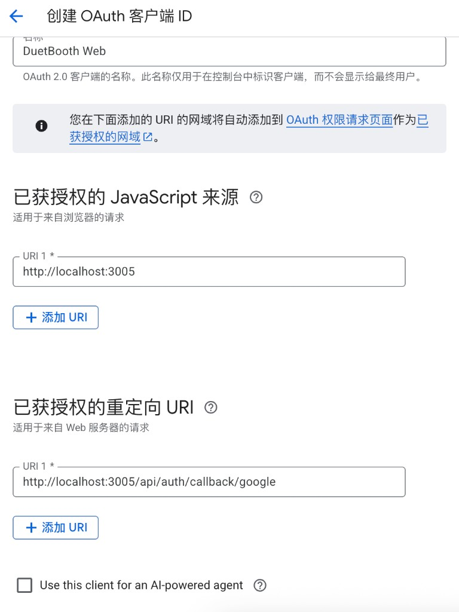
问有个报错，如截图所示：
已修好。
原因是开启了 cacheComponents 后，Header 里 await auth() 会挡住预渲染。登录状态已改到客户端用 useSession() 读取。
刷新 http://localhost:3005，左下角那个 1 Issue 应消失；登录/积分不受影响。
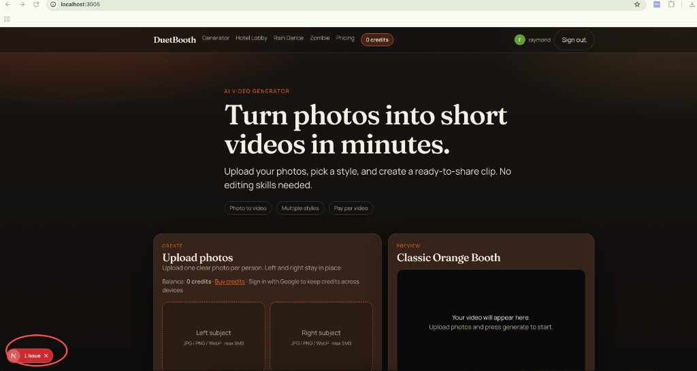
问有个报错，如截图所示：
已修好。
原因是开启了 cacheComponents 后，Header 里 await auth() 会挡住预渲染。登录状态已改到客户端用 useSession() 读取。
刷新 http://localhost:3005，左下角那个 1 Issue 应消失；登录/积分不受影响。
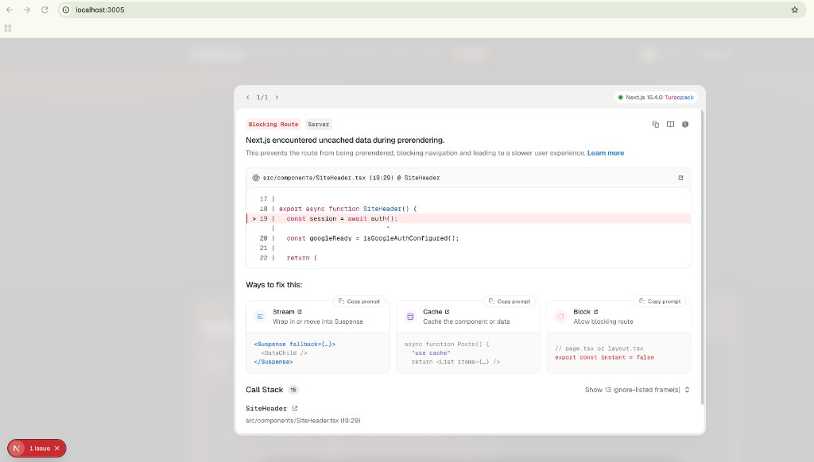
问如截图所示，我再创建后，之前的会被覆盖吗，还是会增加一给key
截图里这是 Standard keys（标准密钥），不是 Restricted。
不会「再多出一个」Secret key。 正式环境通常就这一对：
pk_live_... Publishable keysk_live_... Secret key你点的一般是：
| 操作 | 结果 |
|---|---|
| Reveal / 显示密钥 | 只是把现有那串 sk_live_... 显示出来，不覆盖、不加新 key |
| Roll key / 滚动密钥 | 会生成新的 sk_live_...，旧的会在宽限期后失效（等于换新、废旧），不是并存两套长期可用 |
Restricted keys 才可以建很多个；Standard 的 Secret 始终是「这一条」，换就用 Roll。
你现在要上线：在 Secret key 那行点 Reveal，复制后写进服务器 Secrets 即可。本地继续用 sk_test_...，别把 live key 写进会提交的代码。
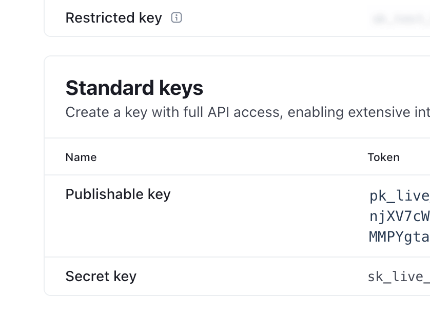
问如截图所示 ，我要选择create secret key吗，因为之前key显示不全啊
不用点 Create secret key。
sk_live_...Swgm 是故意遮住的，不是坏了。点现有那一行 Secret key 的 token（或右侧 ...），选 Reveal / 显示密钥，会弹出完整 sk_live_...，复制一次即可。
只有这些情况才用 Create secret key：
新建后旧 key 通常还在；不用的话再在 ... 里删/滚掉，避免多把 live key 同时有效。
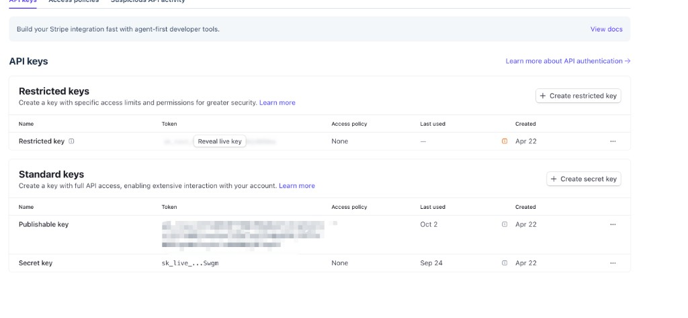
问只有这些菜单
那就对上了：现在这把 Secret key 创建后只显示一次，之后菜单里没有 Reveal，只能看到 sk_live_...Swgm 这种遮罩。
你有两条路：
sk_live_...，旧的还在sk_live_...Swgm，别点 RotateCopy API key ID 只是复制 key 的 ID，不是完整密钥，没用。
总结：完整密钥找不回来了，就点 Create secret key，弹出时马上复制；本地继续用测试 key，别把 live key 贴到聊天里。
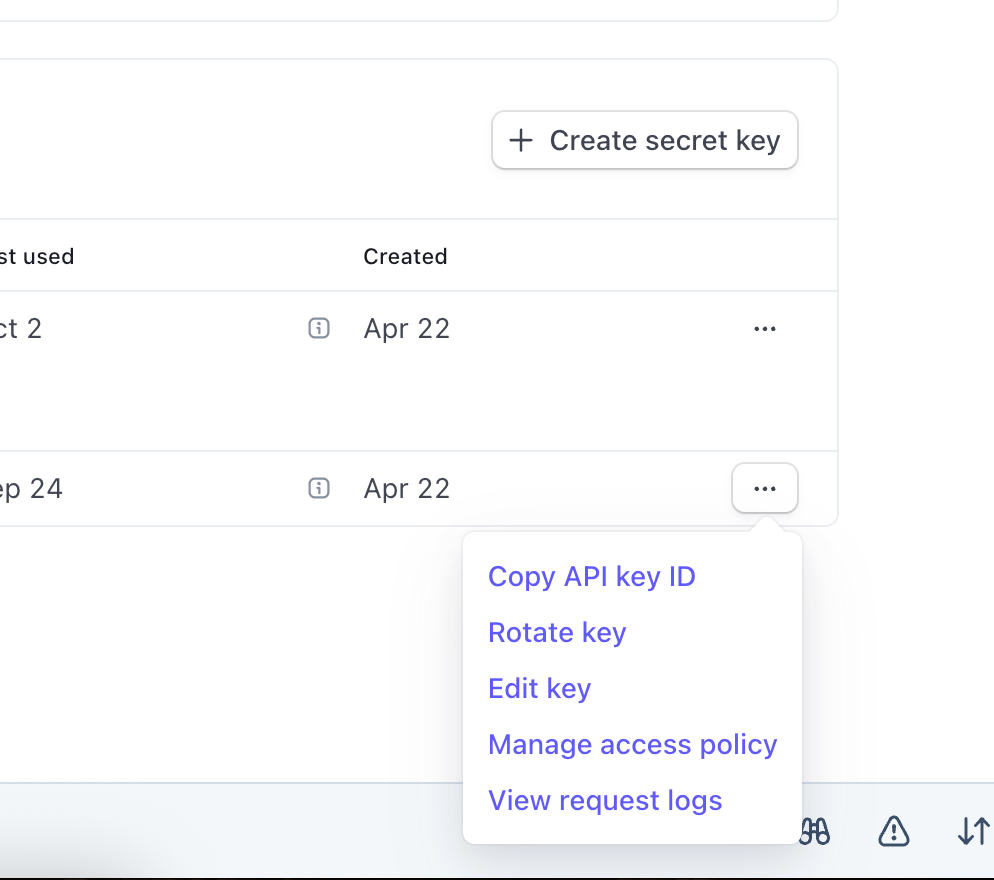
问选择哪个
选第一个：Powering an integration you built。
这是你自己网站/后端（Next.js）调 Stripe API 用的。
后面两个别选：
- 第三方应用/插件
- 授权 AI agent（Cursor 等）
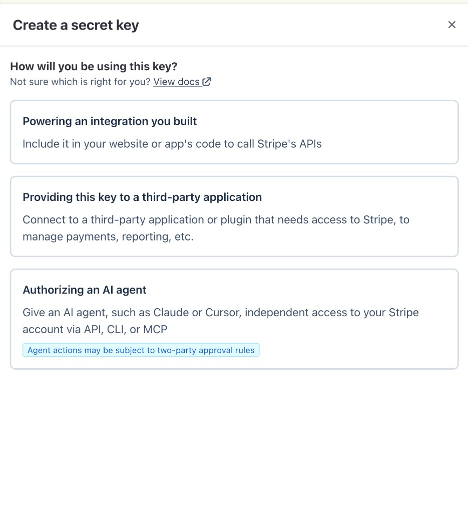
问进来后是这个 ，如截图所示
对，这就是 Cloudflare Dashboard 首页，注册成功了。
接下来按清单点左侧这几块即可（现在不用全做完）：
| 要做的事 | 点哪里 |
|---|---|
| Workers | 左侧 Build → Compute |
| KV（DUETBOOTH_KV） | 左侧 Build → Storage & databases |
| 域名 | 中间 Add a domain，或左侧 Domains |
中间那个 Create app 也可以，我们项目更适合用本地 wrangler / OpenNext 部署，不一定从「Create app」向导起步。
你现在有域名了吗？有的话可以先 Add a domain；没有也可以先建 KV，域名后补。
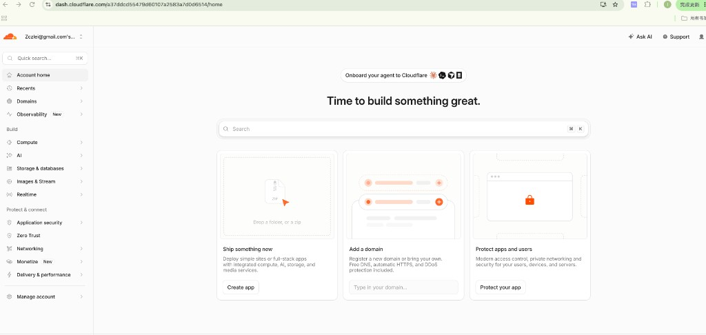
问选哪个
选 Standard，然后点 Create。
Jurisdiction 是数据必须留在某国/地区才用；一般站点不需要。
名字用 DUETBOOTH_KV 也可以。创建后把页面上的 Namespace ID 复制留着。
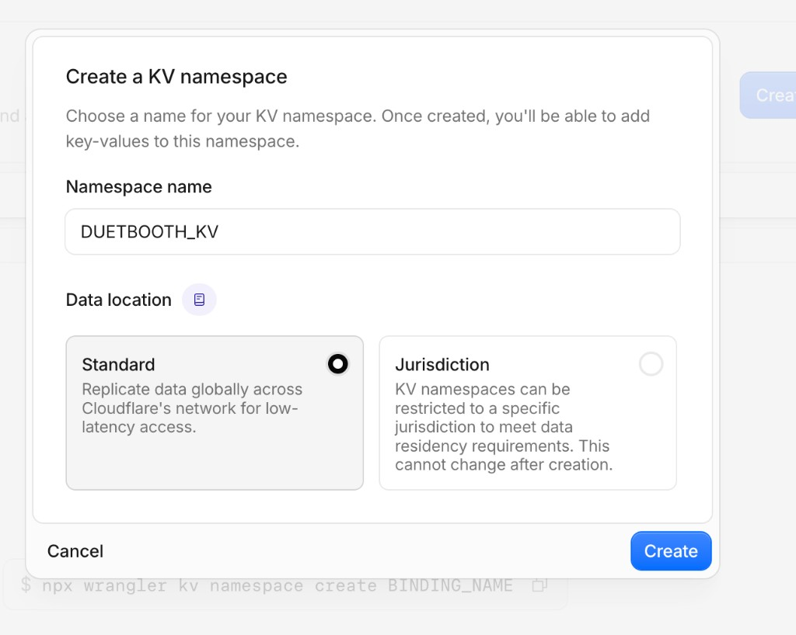
问如截图所示
对，KV 建好了。空的、没有 entries 是正常的——积分和任务会由程序自动写入，不用点 Add entry。
下一步：点顶部的 Settings，把 Namespace ID 复制发给我（一串类似 xxxxxxxxxxxxxxxxxxxxxxxxxxxxxxxx 的 ID）。
有了 ID 我就可以在项目里写进 wrangler.toml，然后接 OpenNext 部署。
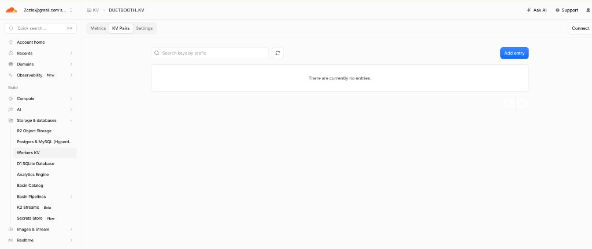
问699306fe965d4c88b74511941bd0c2ff，如截图所示
Namespace ID 已写入 wrangler.jsonc：699306fe965d4c88b74511941bd0c2ff，绑定名 DUETBOOTH_KV。
同时已接好 OpenNext 脚手架：
wrangler.jsonc（Worker 名 duetbooth）open-next.config.tspnpm deploy / pnpm preview 脚本## 你这边接下来
1. 本机登录 Cloudflare：
```bash
cd /Users/zhaolei/newwords/video-effects
npx wrangler login
```
2. 登录成功后告诉我，我可以帮你跑第一次 pnpm deploy（会先用 *.workers.dev 地址）。
3. 上线前再用 wrangler secret put ... 写入 Stripe / KIE / Google 等密钥。
现在不用在网页上建空白 Worker，部署命令会自动创建 duetbooth。
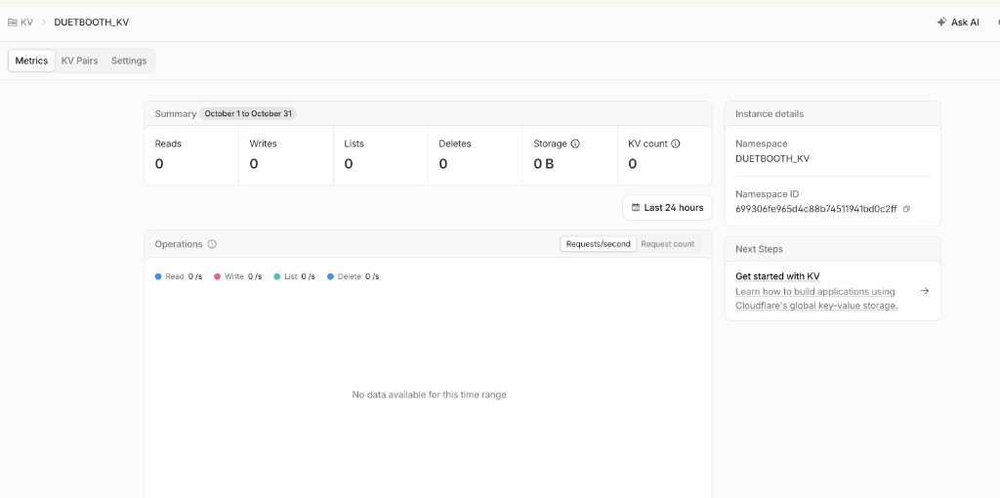
问如截图所示，
登录没问题。代码也已经 build 成功，但部署停在这一步：
账号还没注册 workers.dev 子域（第一次用 Workers 必做）。
请你本机浏览器打开：
https://dash.cloudflare.com/a37ddcd55479d60107a2583a7d0d6514/workers/onboarding
按提示选一个子域名字（例如 zczlei → 以后站点会是 https://duetbooth.zczlei.workers.dev），完成注册。
做完告诉我，我再跑一次 pnpm deploy。
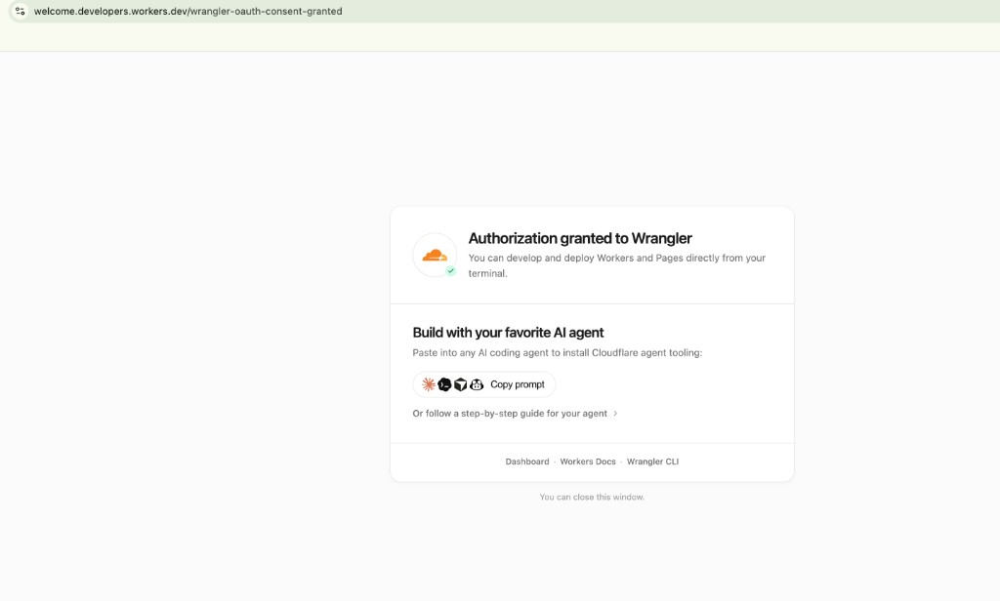
问如截图所示 ，打开 dash.cloudflare.com/a37ddcd55479d60107a25…514/workers/onboarding 404
那个 onboarding 链接已经失效（404）。我改用 API 注册了子域 zczlei，并完成部署。
线上地址： https://duetbooth.zczlei.workers.dev
KV DUETBOOTH_KV 已绑上。
注意：线上还没有 Stripe / KIE / Google 等 Secrets（.env.local 不会自动上去）。要付费和生成可用，下一步需要 wrangler secret put ...。要的话我可以按你本地 .env.local 一项项帮你写入（密钥不会再贴回聊天）。
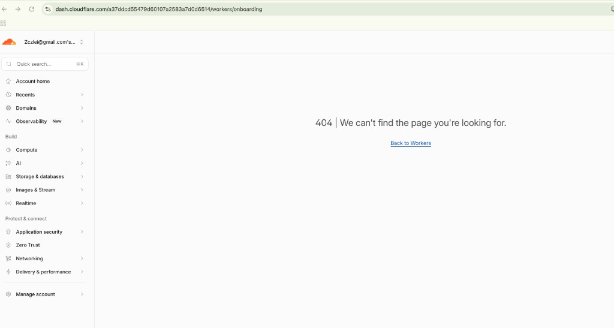
问现在打开页面，见截图
原因是 Next.js 16.4 的 preview-props.json 未被 OpenNext 内联。正在打补丁并重新部署。
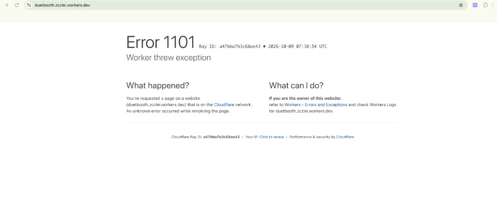
问选哪个
选第一个：Connect a domain。
域名还在 GoDaddy，只是把 DNS/加速交给 Cloudflare，方便绑 Worker。不用 Transfer（搬家注册商），也不用 Buy。
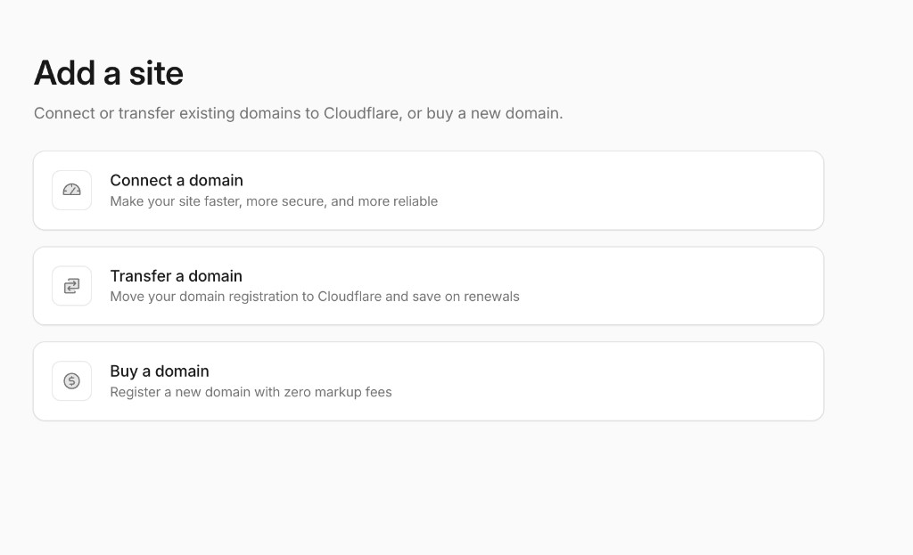
问如截图所示，填哪些
这样填即可：
duetbooth.co（不要加 https:// 或 www）后面选套餐选 Free，再按提示去 GoDaddy 改 Nameserver。
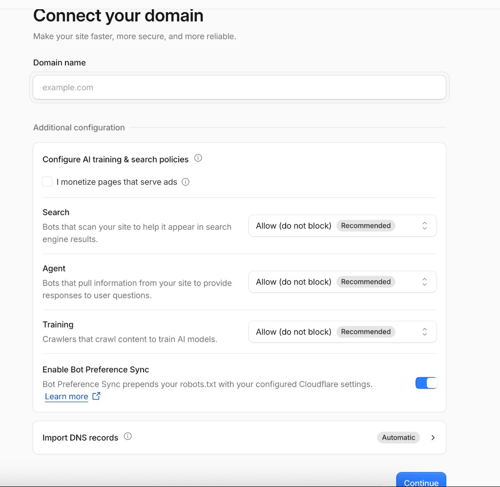
问这个如何操作
这页是在确认 DNS 记录。GoDaddy 自动导入的那些 A 记录（15.197… / 3.33…）是停车页，不是你的 Worker，先不用管它们。
## 现在怎么做
xxx.ns.cloudflare.com）duetbooth.co → Nameservers → 改成 Cloudflare 那两个 → 保存## Active 之后
到 Worker duetbooth → Domains → 添加 duetbooth.co（和可选的 www）。
绑好后 Cloudflare 会自动配好指向 Worker 的记录；那些停车页 A 记录如果还在，可以再删掉，避免冲突。
Proxied（橙云）/ DNS only（灰云）：这页先别改。绑 Worker 自定义域时系统会处理好。
总结：这页点 Continue to activation → 去 GoDaddy 改 NS → 等 Active → 再绑 Worker。
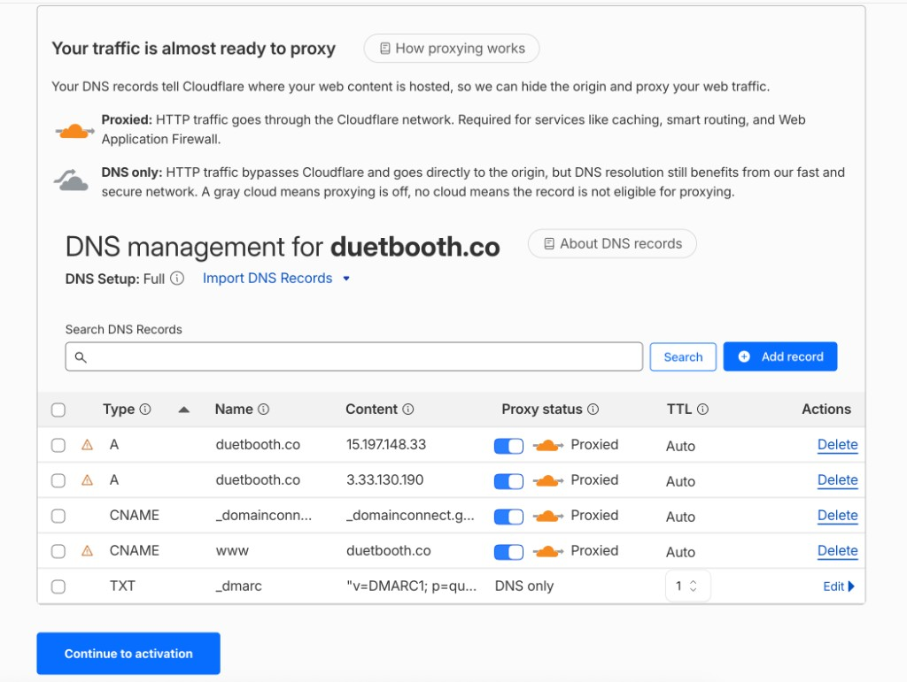
问如截图所示，
对，就是这一步。去 GoDaddy 把 Nameserver 换成 Cloudflare 这两个：
```
daniella.ns.cloudflare.com
rene.ns.cloudflare.com
```
## GoDaddy 操作
1. 登录 GoDaddy → 我的产品 → duetbooth.co → DNS / Nameservers
2. 点 Change / 更改
3. 选 I’ll use my own nameservers（使用我自己的命名服务器）
（不要继续用 GoDaddy 默认）
4. 删掉原来的：
- ns41.domaincontrol.com
- ns42.domaincontrol.com
5. 填上上面两个 Cloudflare 地址（各一行）
6. 保存
改完回到 Cloudflare，等状态变成 Active（常几分钟到几小时）。变成 Active 后再把域名绑到 Worker duetbooth。
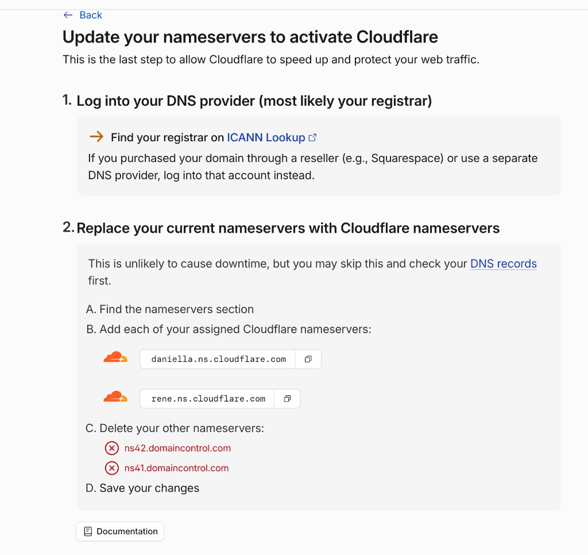
问如截图所示：
GoDaddy 这边已经改对了：两个 NS 都是 Cloudflare 的，不用再点 Change Nameservers。
## 下一步
1. 回到 Cloudflare 里 duetbooth.co 的页面
2. 看状态是否已是 Active
- 还是 Pending：点 Check nameservers / 刷新等一会儿
3. 变成 Active 后：
Compute → Worker duetbooth → Domains → 添加 duetbooth.co（可选再加 www.duetbooth.co）
GoDaddy 上的 IDLE 一般只是域名未挂旧主机，不影响；NS 已指向 Cloudflare 即可。
Cloudflare 显示 Active 或域名已经能打开时告诉我，我帮你改线上的 NEXT_PUBLIC_APP_URL / AUTH_URL。
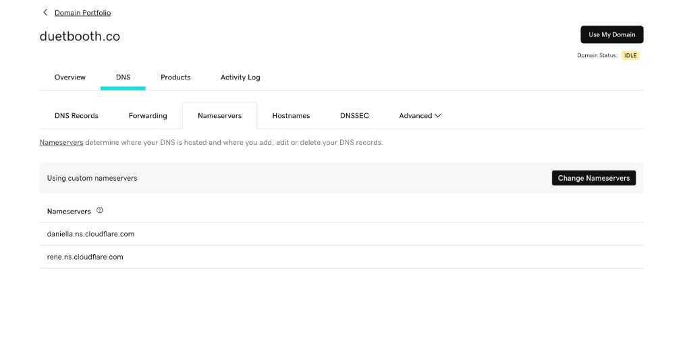
问上次停留的界面，如截图所示
GoDaddy 已经改过 NS 了，这页不用再填东西。
直接点蓝色按钮：I updated my nameservers。
Cloudflare 会去检测。若还显示 Pending，等几分钟再点一次检查即可。
下面 Recommended：
- DNSSEC：去 GoDaddy 确认是关的（多数默认就关）
- Only allow Cloudflare IP…：可以忽略（你们用 Worker，没有自己的源站防火墙）
点完按钮后，看 Overview 是否变成 Active。变成 Active 再去绑 Worker 域名。
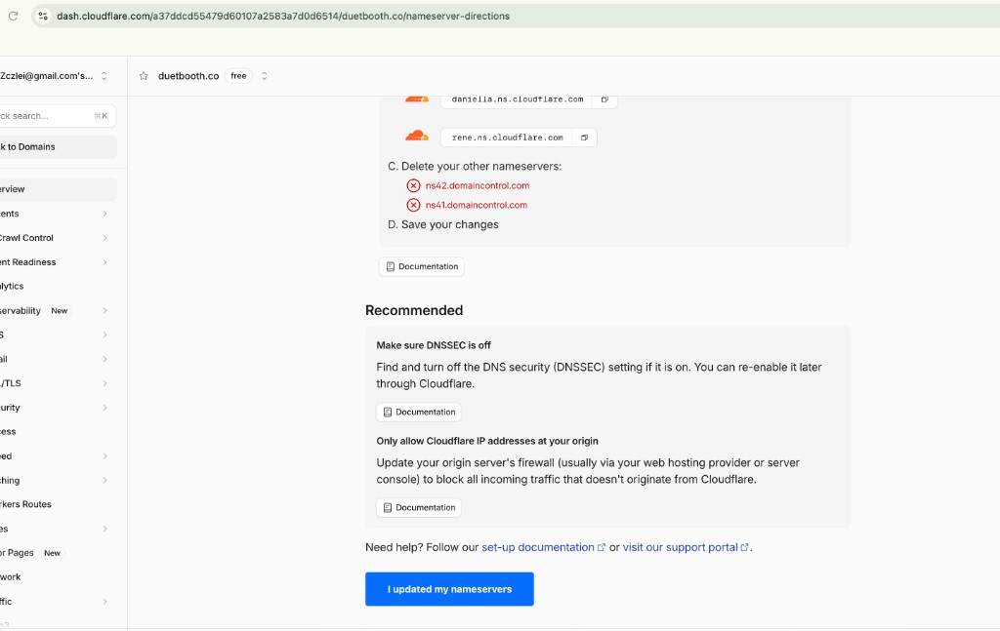
问变成这个页面
公共 DNS 已经指向 Cloudflare 了（生效很快）。
现在你可以：
Active 之后右侧 Workers → Connect Worker（或进 Worker duetbooth → Domains）把 duetbooth.co 连上。
连好告诉我，我帮你改线上 URL 配置。
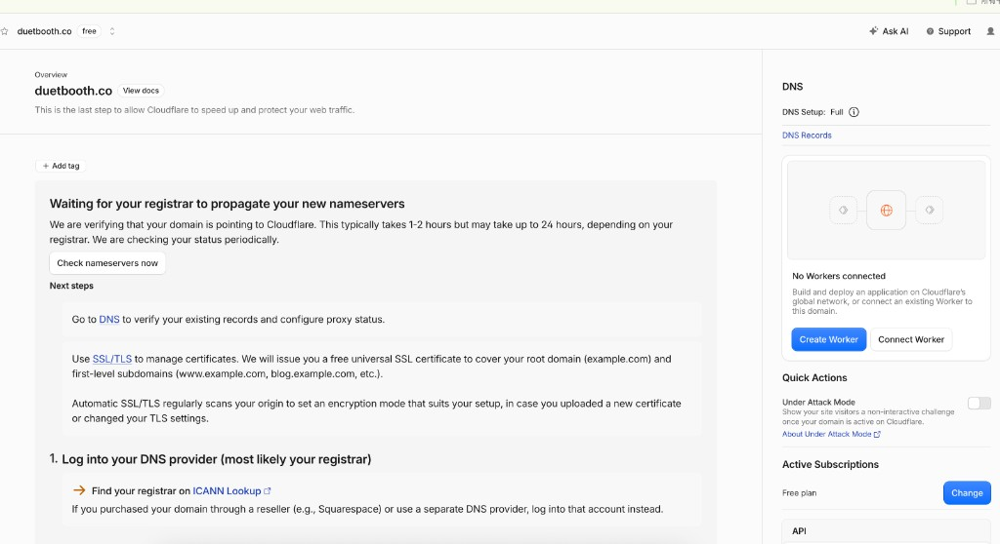
问如截图所示
这页就是在等 Cloudflare 自己确认，正常。NS 其实已经生效了（公网已指向 Cloudflare）。
duetbooth.zczlei.workers.dev 仍可用（200）duetbooth.co 现在是 525（流量到了 CF，但还指向 GoDaddy 停车页，证书没接好）——等 Active 后绑 Worker 就会好## 你现在可以
1. 先放着，过半小时～2 小时再刷新 Overview，直到不再显示 Waiting
2. 或者右侧直接点 Connect Worker → 选已有的 duetbooth → 主机名填 duetbooth.co
（有时 Pending 也能连；连不上就等 Active 再试）
不用再改 GoDaddy。 变成 Active 或绑好 Worker 后告诉我，我帮你改 NEXT_PUBLIC_APP_URL。
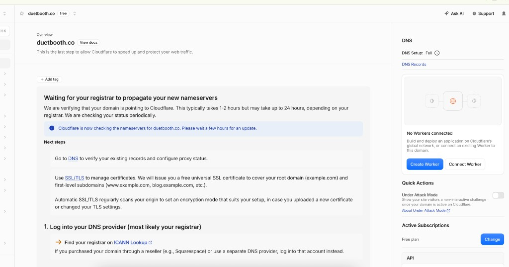
问如截图所示
域名已经 Active 了。下一步把站绑上去：
右侧 Workers → 点 Connect Worker（不要点 Create Worker）→ 选已有的 duetbooth → 主机名填 duetbooth.co。
有 www 的话再连一次 www.duetbooth.co，或之后在 DNS 里把 www CNAME 到根域。
绑好后告诉我，我帮你把线上 URL 改成 https://duetbooth.co。
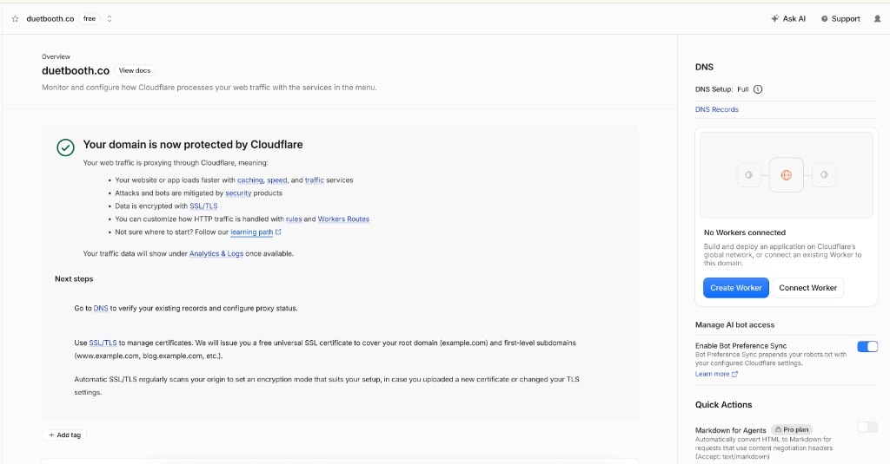
问如截图所示
你进的是 Workers Routes（域名下的路由页），可以在这里绑。
## 在这页操作
duetbooth.co/*duetboothwww.duetbooth.co/* → 同一个 Worker duetbooth## 若提示冲突
去 DNS → DNS Records，把指向停车页的那两条 A 记录（15.197… / 3.33…）删掉，再保存路由。
---
也可以换入口（效果一样或更好）：
左侧回到账号级 Compute / Workers → 点开 Worker duetbooth → Domains → Add duetbooth.co
绑好后打开 https://duetbooth.co 能出首页就告诉我，我帮你改线上 URL。
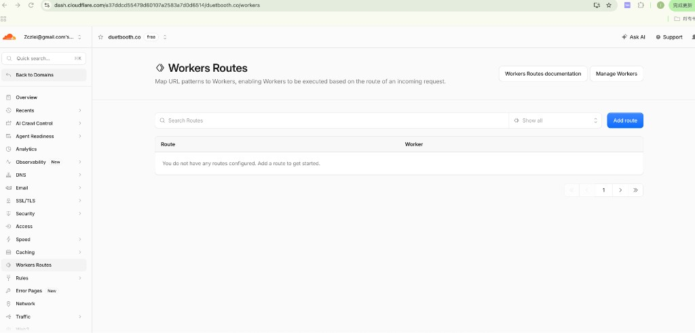
问我走的这个：也可以换入口（效果一样或更好）： 左侧回到账号级 Compute / Workers → 点开 Worker duetbooth → Domains → Add duetbooth.co，如截图所示
对，就是这个入口。接着点：
duetbooth.co → 确认www.duetbooth.co右侧现在 Custom domains 是 —，加完后会出现 duetbooth.co。
若提示 DNS 冲突：先去域名 duetbooth.co 的 DNS Records，删掉那两条停车页 A 记录，再回来加自定义域。
加成功后打开 https://duetbooth.co 试一下，能开首页再告诉我。
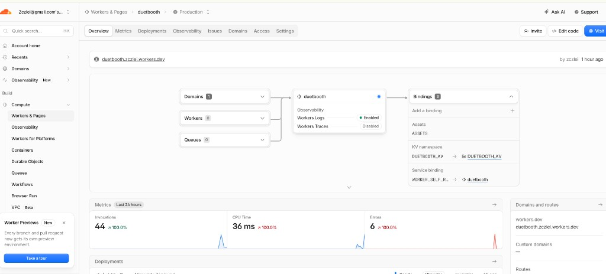
问如截图所示
对，就是这页。
点蓝色 + Add Domain → 填入 duetbooth.co → 确认添加。
成功后再点一次，加 www.duetbooth.co（可选）。
出现冲突就先去域名 DNS 删掉那两条停车页 A 记录，再回来加。
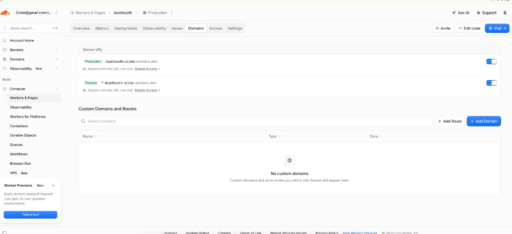
问如截图所示，不用填写吧
对，Subdomain 留空（就是根域 duetbooth.co）。
Enable for 保持 Production，然后点 Add domain。
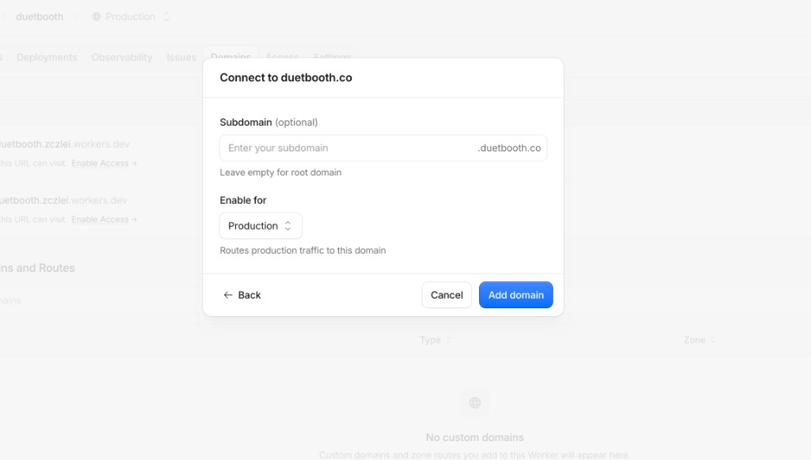
问如截图所示
报错是因为根域上还有旧 DNS 记录（GoDaddy 停车页那两条 A）。先删掉再加。
## 操作
duetbooth.co → DNS → DNS Recordsduetbooth.co 的 A（15.197…、3.33… 之类）_dmarc 等 TXT 可以；_domainconnect 可删可留duetbooth → Domains → Add Domain，Subdomain 仍留空 → Add domain删完根域 A/CNAME 后再加，一般就能成功。
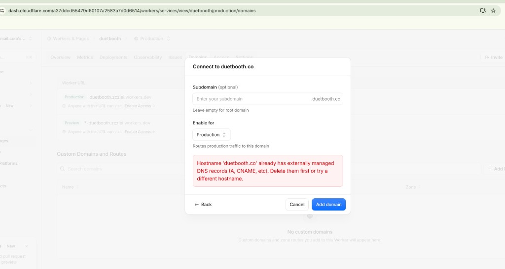
问如截图所示
对，就是 Cloudflare 这个页面。
删除这两条 A 记录（根域停车页）：
duetbooth.co → 15.197.148.33duetbooth.co → 3.33.130.190每行右侧点 … / Edit → Delete。
建议也删：
_domainconnect... 那条 CNAME（GoDaddy 连接用，绑 Worker 不需要）先留着：
www → duetbooth.co（等会儿可以再给 www 加自定义域，或之后改）_dmarc TXT删完两条 A 后，回到 Worker duetbooth → Domains → Add Domain，Subdomain 留空 → Add。
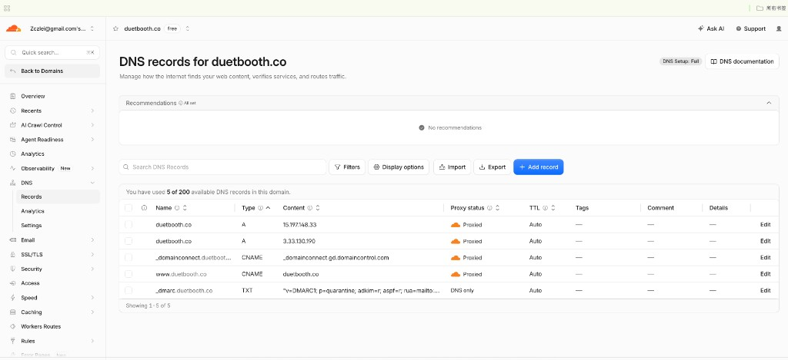
问已经删除了
很好，DNS 清干净了。
现在回去：
Compute → Workers → duetbooth → Domains → + Add Domain
Subdomain 留空 → Enable for Production → Add domain
成功后再可选加一次 www（Subdomain 填 www）。
加完打开 https://duetbooth.co ，能出首页就告诉我，我帮你改线上 NEXT_PUBLIC_APP_URL / AUTH_URL。
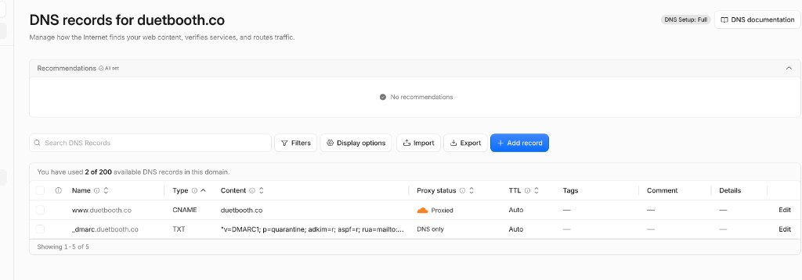
问如截图所示：
根域 duetbooth.co 已经加上了（背景列表里有）。报错只是加 www 时和现有 www CNAME 冲突。
## 二选一
A（推荐先这样）： 点 Cancel，先只用 https://duetbooth.co。www 以后再说。
B（也要 www）：
1. Cancel
2. DNS Records 里 删掉 www → duetbooth.co 那条 CNAME
3. 再 Add Domain，Subdomain 填 www
我先帮你把线上地址改成正式域名。
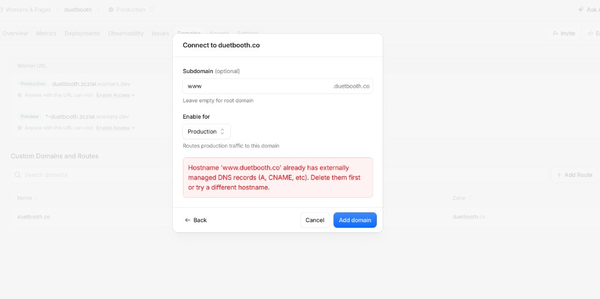
问如截图所示，现在改成什么
不用删掉 localhost，在原有基础上 再加 线上这两项：
## 已获授权的 JavaScript 来源
保留：
- http://localhost:3005
再加：
- https://duetbooth.co
（以后有 www 再加 https://www.duetbooth.co）
## 已获授权的重定向 URI
保留：
- http://localhost:3005/api/auth/callback/google
再加：
- https://duetbooth.co/api/auth/callback/google
点 保存。生效可能要几分钟。客户端 ID / 密钥不用换（和线上 Secrets 里已有的是同一套）。
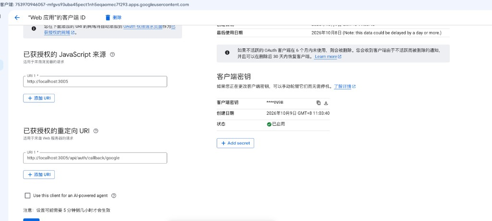
问如何进入 webhook页面
从你截图的侧边栏进：
端点 URL 填：
https://duetbooth.co/api/webhook/stripe
事件至少选：checkout.session.completed（没有「全选」就搜 checkout 勾相关的）
创建后复制 Signing secret（whsec_...）发我，或自己写入线上 Secrets。
也可直接打开：https://dashboard.stripe.com/webhooks
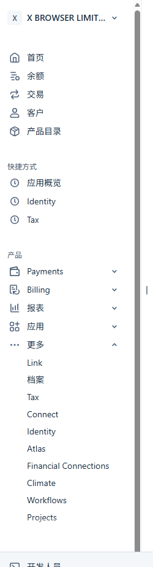
问如截图所示
对，就是这页。
点右上角紫色 + Add destination，然后：
https://duetbooth.co/api/webhook/stripecheckout.session.completed（可搜 checkout）duetboothwhsec_...）发我现有的 theme-shop / tokit.ai 不用动，新建一条给 DuetBooth。确认是 正式模式（不是 Sandbox / Test）。
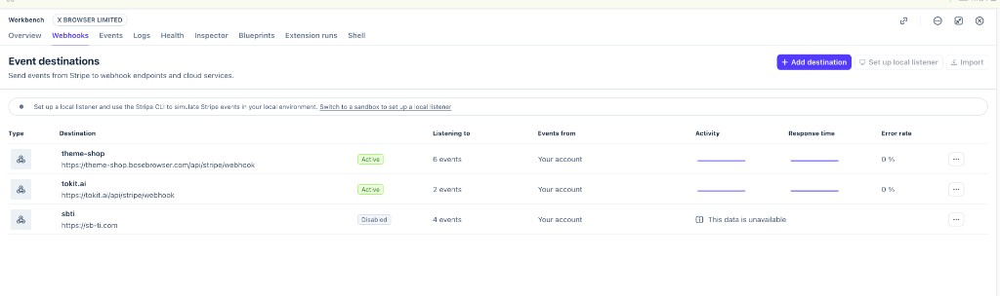
问见截图
勾选这一条即可：
checkout.session.completed
其它（async_payment_failed / expired 等）可以不勾，代码目前只处理 completed。
勾完点 Continue →，继续填 URL：https://duetbooth.co/api/webhook/stripe。
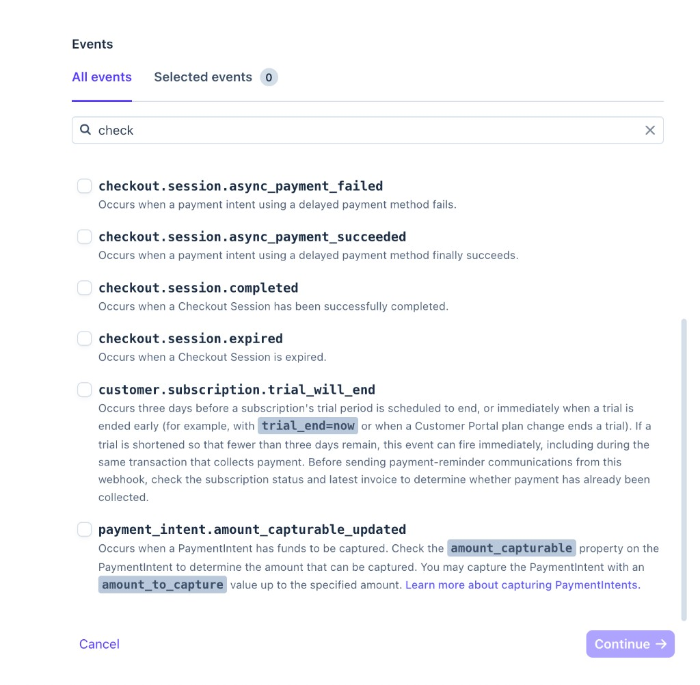
问我勾选了4条，应该没影响吧
没影响。多勾的那几条 Stripe 会推过来，代码里只会处理 checkout.session.completed，其它会忽略，不会出错。
继续点 Continue → 填 URL：https://duetbooth.co/api/webhook/stripe 即可。
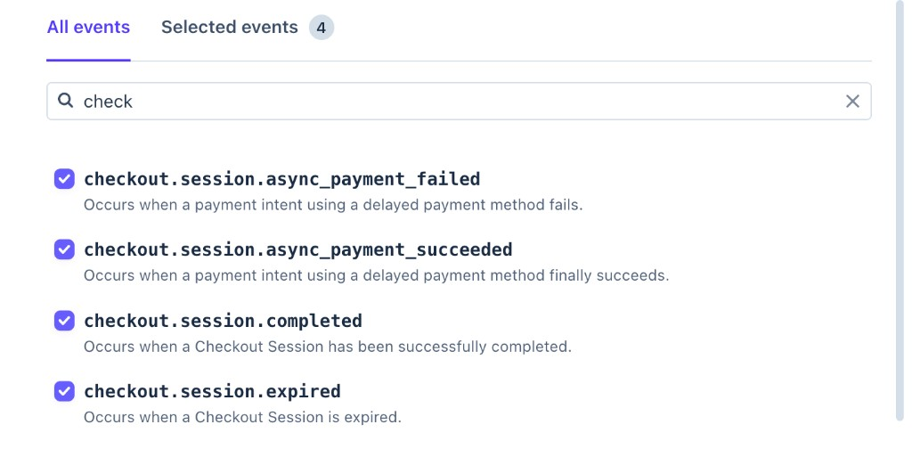
问这个选哪个
选第一个：Webhook endpoint，然后点 Continue →。
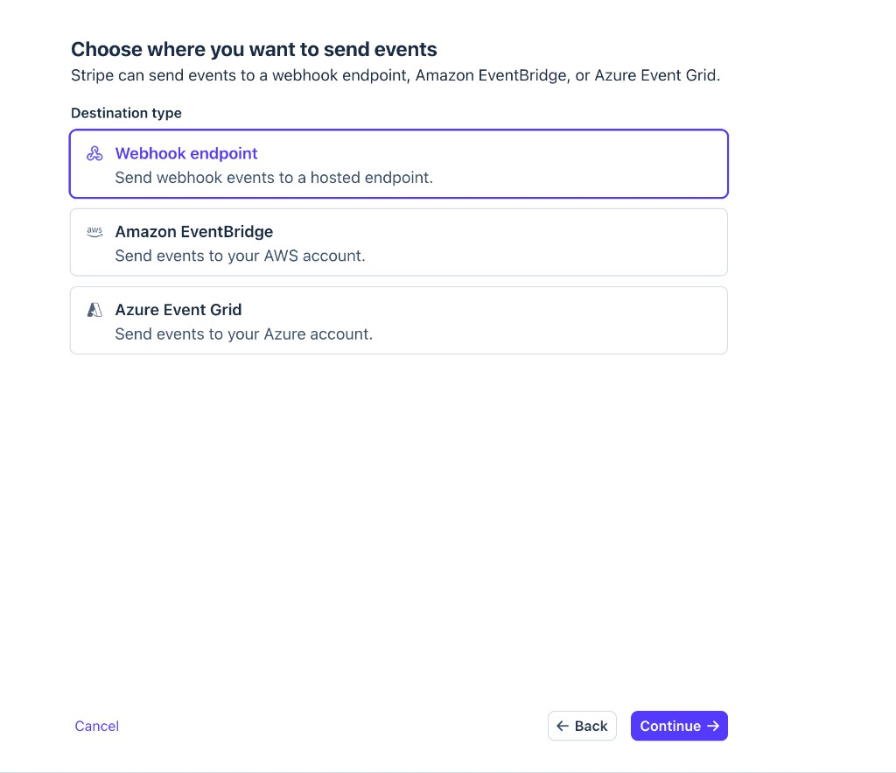
问如截图所示 ，如何填写
这样填：
| 字段 | 填什么 |
|---|---|
| Destination name | duetbooth（随便起，好认就行） |
| Endpoint URL | https://duetbooth.co/api/webhook/stripe |
| Description | 可空，或写 DuetBooth credits checkout |
然后点 Create destination。
创建后进入这个 destination，找到 Signing secret，点 Reveal 复制 whsec_... 发我。
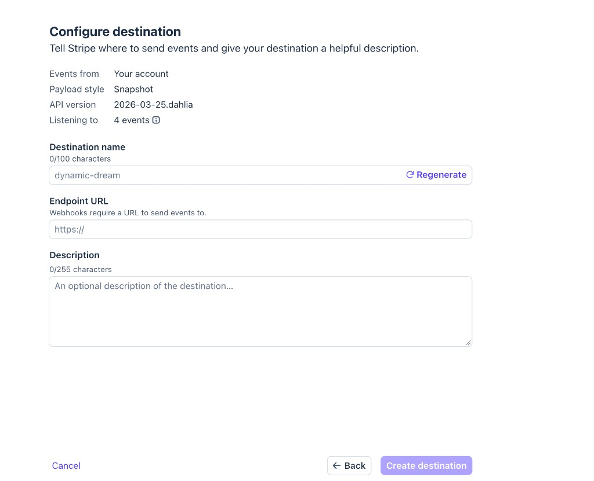
问如截图
点卡片 Redirect from WWW to root 上的 Create from template。
这就是 www → 主域（duetbooth.co），正是你要的。
下一页一般直接 Deploy / 保存即可，默认会做 301。不要选下面的 “Redirect from root to WWW”。
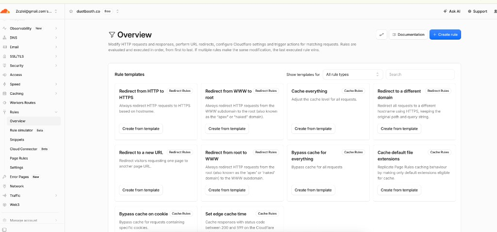
问如截图所示
这页可以基本不动，按模板来。
Redirect from WWW to root [Template] 即可https://www.* 即可（在你这个站点上会匹配 www.duetbooth.co）https://www.duetbooth.co/*https://${1} 或带路径保留）保存后用无痕窗口打开 https://www.duetbooth.co，应跳到 https://duetbooth.co。若 Then 那一块截图发我，我可以帮你对一下目标 URL。
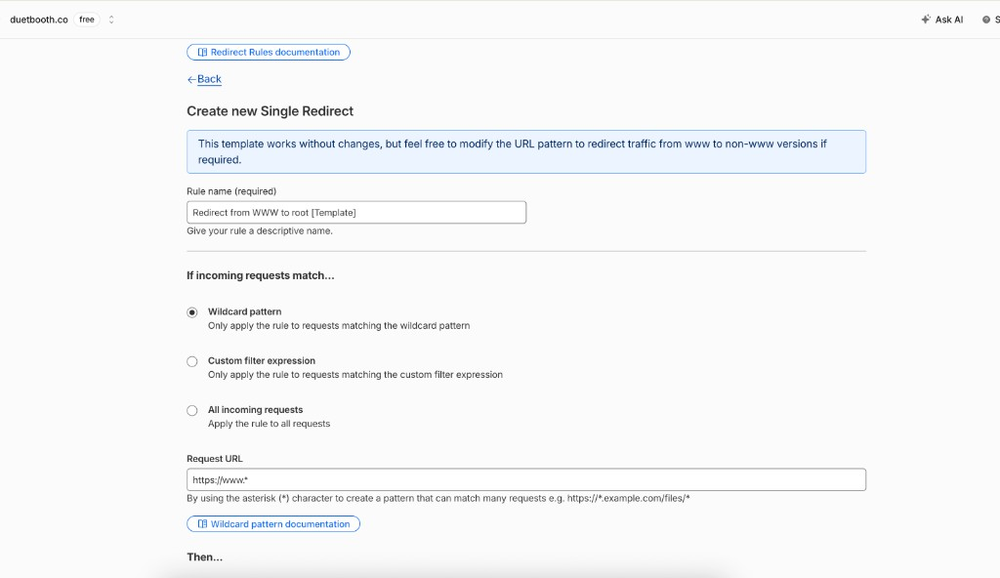
问如截图
这页整体对，再确认两点后点 Deploy：
https://www.*（www. 和 * 之间不要空格）? 后面的不会丢）其余保持：
- Target URL：https://${1}
- Status code：301
然后点蓝色 Deploy。
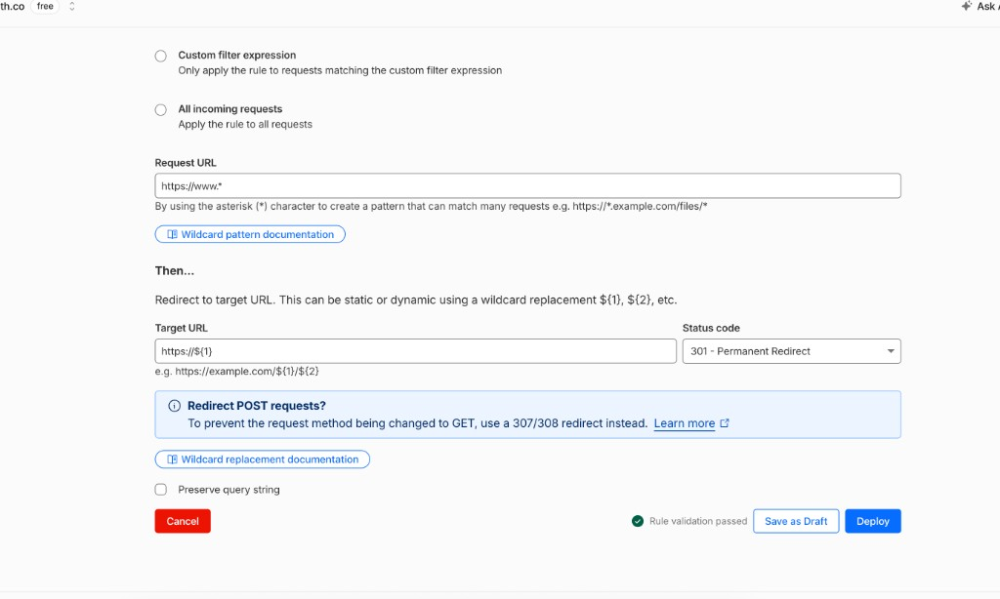
问如截图所示
选第二个：Create a new proxied DNS record，再点 Deploy rule。
原因：跳转规则只对「走 Cloudflare 代理（橙云）」的流量生效；选这个会给 www 建一条代理记录，规则才能拦住。
若提示和 Worker 自定义域冲突：
1. 改选 Ignore and deploy rule anyway → Deploy
2. 去 DNS → Records 看 www 是否为橙云 Proxied；若是灰云，改成橙云
部署后用无痕窗口打开 https://www.duetbooth.co，应跳到 https://duetbooth.co。
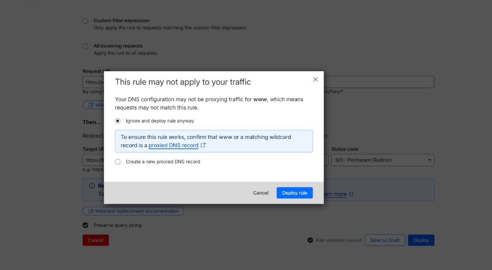
问如截图所示
IPv4 填：192.0.2.1（Cloudflare 提示的占位地址，只为让 www 走橙云，真正访问会被 301 转到主域）。
然后点 Create record & deploy rule。
Type 保持 A，Name 保持 www。
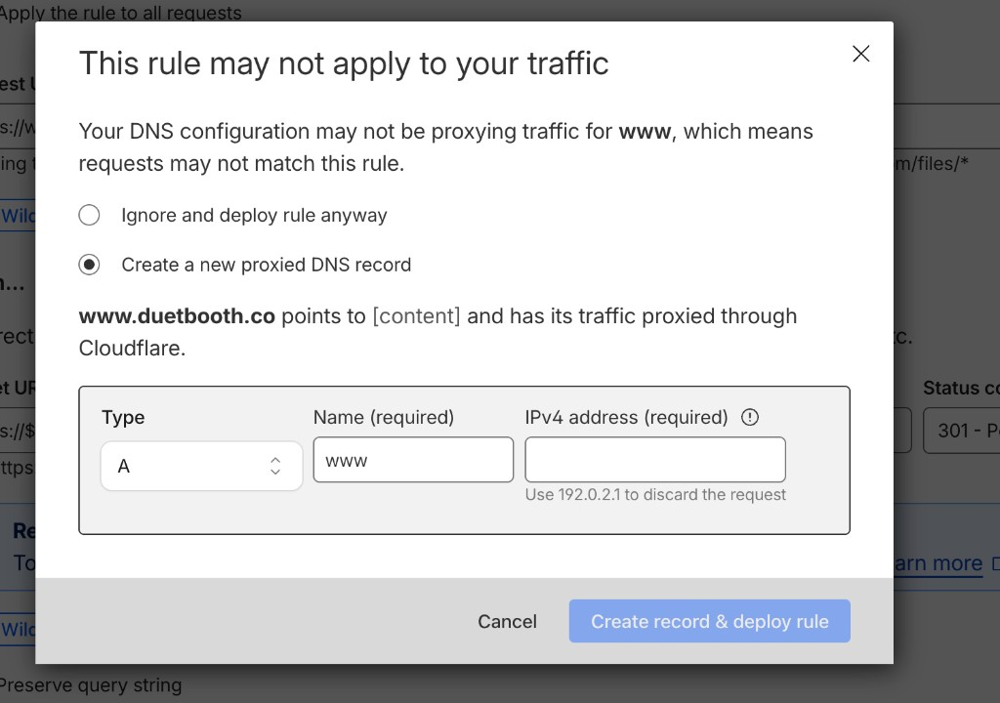
问有冲突。
有冲突是正常的：www 已经作为 Worker 自定义域存在，不能再新建一条 A 记录。
改选第一个：Ignore and deploy rule anyway → 再点 Deploy rule（或 Create… 旁变成 Deploy 的那个按钮）。
www 已经在 Cloudflare 上，跳转规则一般能生效。部署后用无痕窗口打开 https://www.duetbooth.co 验证是否跳到 https://duetbooth.co。
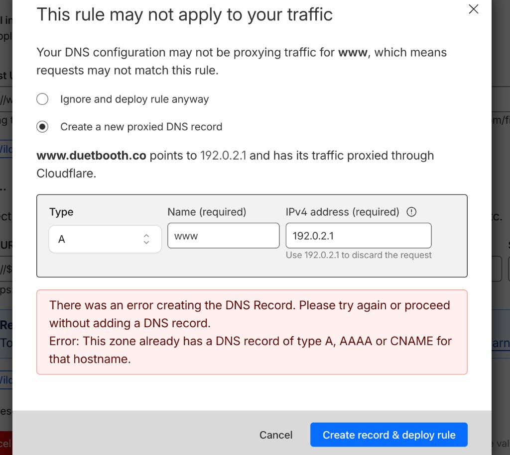
问如截图所示
规则已经生效，配置正确。
已验证：https://www.duetbooth.co → 301 → https://duetbooth.co/（200）。
可以正常用了。
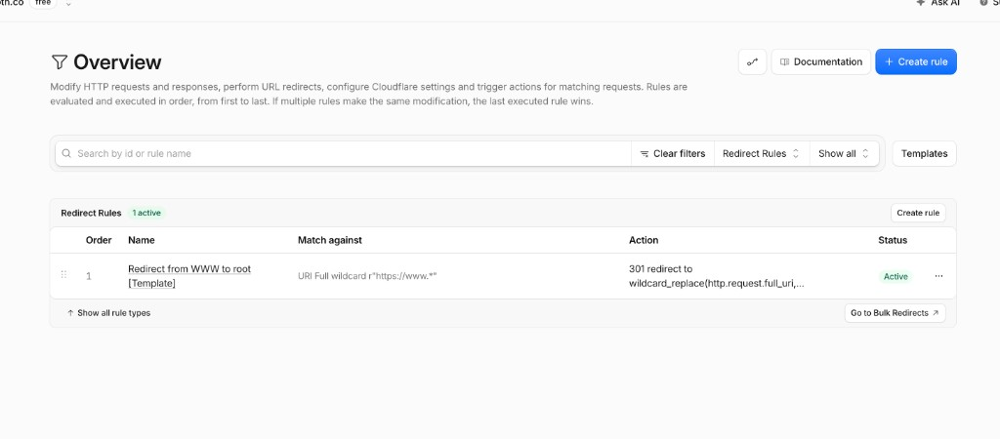
问为啥付费后跳转到如截图所示，本地的
原因已经定位，并修好了。
原因： 创建 Stripe Checkout 时，success_url 来自 getAppUrl()。构建时读了 .env.local 里的 NEXT_PUBLIC_APP_URL=http://localhost:3005，Next 会把 NEXT_PUBLIC_* 打进产物，所以线上结账完成后仍跳回本机。本机用的是 test key，去查 cs_live_… 就会报 No such checkout.session，积分也加不上。
已做：
1. getAppUrl() 优先用运行时密钥 APP_URL / AUTH_URL
2. 已写入 APP_URL=https://duetbooth.co 并重新部署
这次已付的 $0.90： 在线上打开（同一浏览器、已登录）：
https://duetbooth.co/billing/success?effect=hotel-lobby&session_id=cs_live_a1k47lksswlkYhMCiLWqd69GuSkCGy2oKwaTJ1DEMxKy4rCWmv2q4yZ8P3
应能确认并发放 1 credit。若 webhook 已到账，打开后会显示已入账。
之后在 [duetbooth.co](https://duetbooth.co) 再付一次，应会跳回正式域名，不再进 localhost。
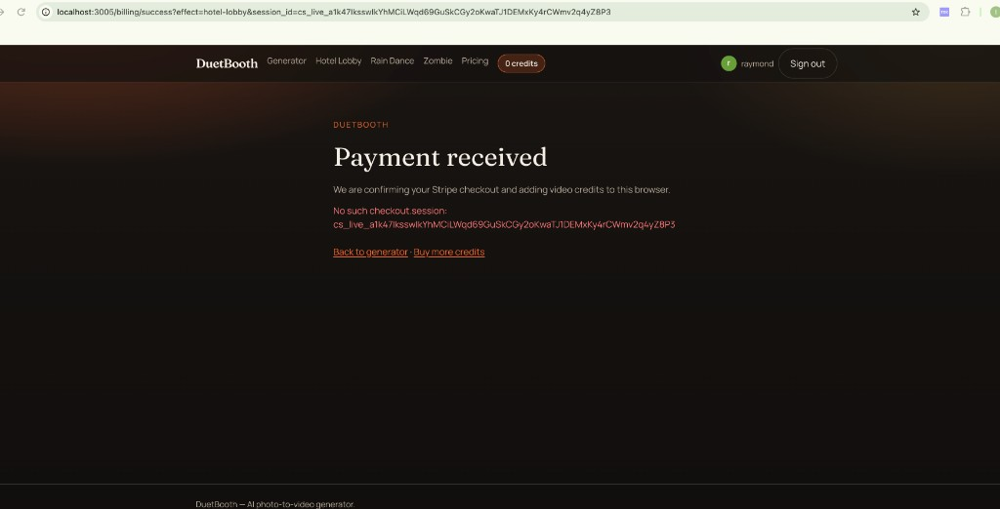
问现在还没看到积分，显示的还是0，如截图所示 ，是要刷新吗
Worker secrets 本应优先于打包进产物的 .env.local；线上仍查不到 cs_live_，说明 Cloudflare 上的 STRIPE_SECRET_KEY 很可能还是 test。正在找回 live key 并重新写入。
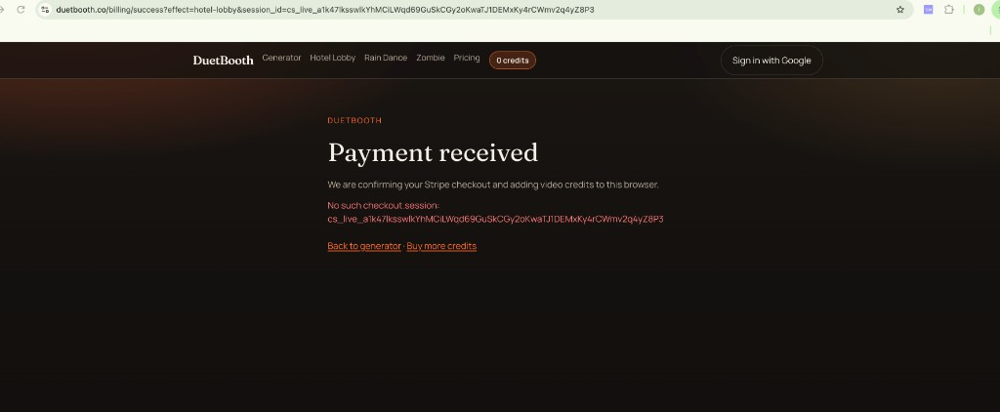
问这个是单个照片生成视频吗
对。Street Zombie（zombie-trend）是 1 张人像照片 → 一段 8 秒 9:16 视频，消耗 1 credit。
和 Hotel Lobby 不同：Hotel Lobby 要 两张 照片做对口型/双人；Rain Dance、Zombie 都是单图。
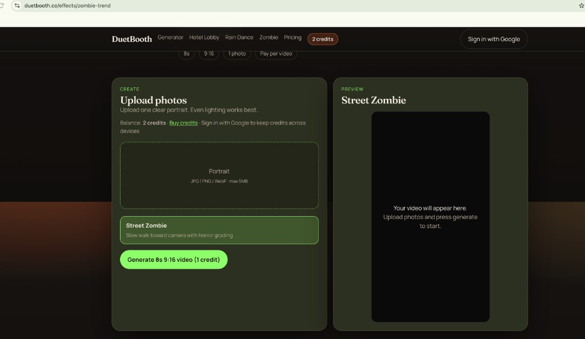
问报错，见截图
原因已经对上，并已上线修复。
原因： 页面把照片以 data: base64 直接塞给 KIE。小图偶尔能过，真人像会触发对方 500 Server exception。积分已按提示退回。
修复： 生成前先把图片上传到 KIE，再用返回的 HTTPS 地址去 createTask。
请再试一次 Rain Dance；余额应仍是退款后的数量。
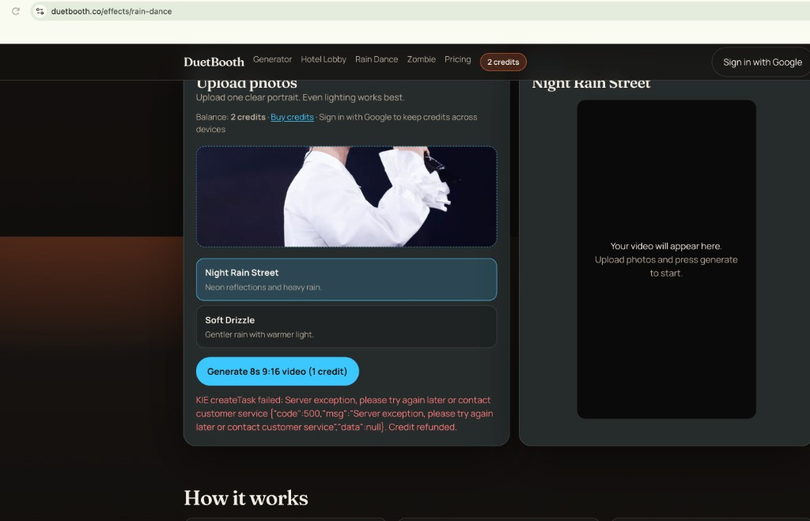
问这个是啥问题？
这不是我们站点的 bug，是 KIE / Seedance 内容审核拦了这张图。
报错大意是：输入图可能涉及版权/受限素材（常见于明星照、官方宣传图、可识别公众人物等），任务被拒；积分已退回。
上传链路这次已经通了（不再是之前的 500）。换一张本人清晰正脸自拍/人像再试即可；侧身、舞台造型、疑似艺人照更容易被拦。
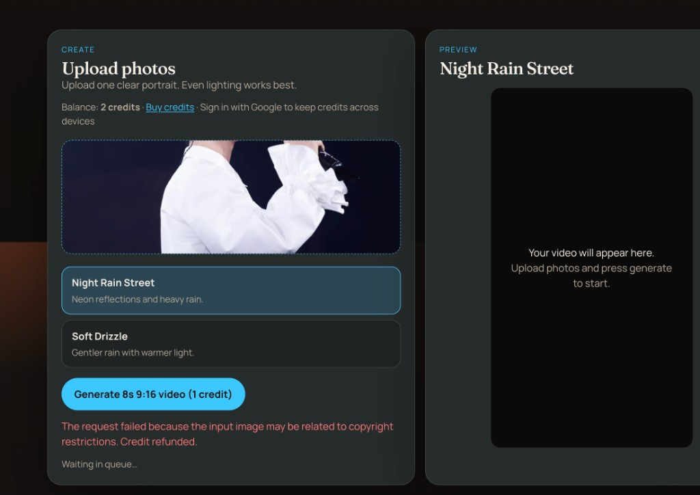
问如截图所示，这个图片是什么图标，是给网站设计的吗，还是用的缺省的
红圈里那个不是网站图标，是浏览器扩展栏里的扩展：白底黑 N，一般是 Next.js DevTools（开发者装的），和 DuetBooth 页面设计无关。
DuetBooth 自己目前也没有单独设计 favicon（标签页小图标多半是 Next 默认/占位）。若要品牌图标，需要另做一枚站点 favicon。
问DuetBooth 自己目前也没有单独设计 favicon……设计一个吧
已设计并上线：暖色暗底 + 橙色照相亭边框 + 两个米色人像剪影（呼应 Duet/Booth）。提供 /favicon.svg、/icon、/apple-icon；硬刷新标签页可见。
| 现象 | 处理 |
|---|---|
| 付费跳 localhost | APP_URL + 构建勿烘焙 .env.local |
| No such checkout.session | live key；注意 session_id 的 I/l |
| 积分写不进 | 必须 store:"kv" |
| KIE 500 | 先上传图再 createTask |
| copyright restrictions | 换本人清晰人像；积分已退 |
cd video-effects pnpm deploy npx wrangler secret list --name duetbooth curl -s https://duetbooth.co/api/wallet